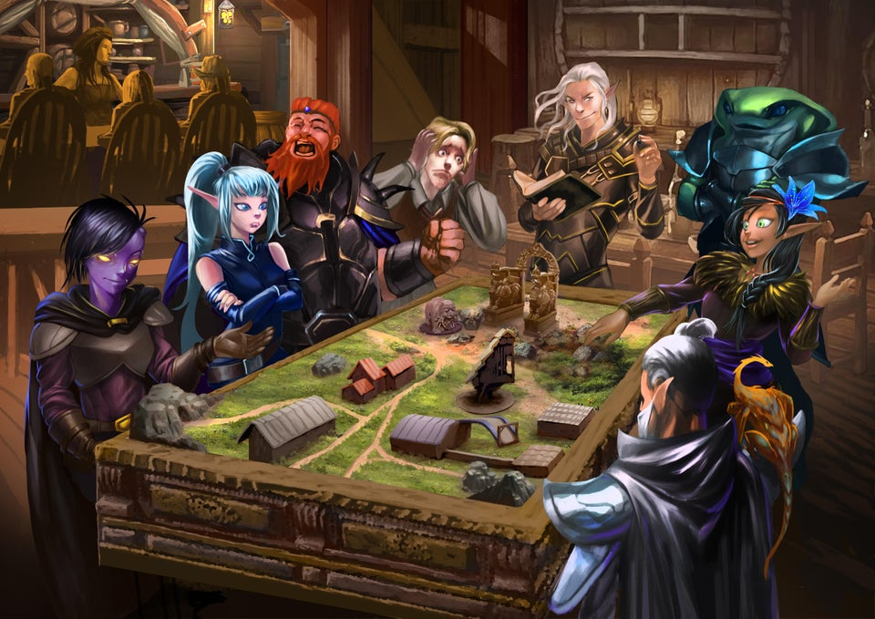

Jennifer Patton
Getting to know me...
My work background is very unqiue. I started working as a children's entertain when I was 14 years old for my mother's company. I learned at a young age how to manage 50+crowd, and learn how to think fast on my feet and time magement. When I graduated from the University of South Carolina, I started working as a Applied Behavioral Analysist (ABA) therapist. Working with a team to help an individual that is dianosis with Autism to learn new skills in order to improve their quailty of life. Working in a team, I had to learn how to communicate struggles, growth, and track data in order to see if a program is working or do we need to adjust. Working with computres and graphing data points, reminded me how much I love computres and set me on a new path of learning how to code.
When I am not working, I am maintaining a healthy work-life balance, I am doing the following things...
Table Top Role Playing Games
Meeting with my friends on a specific day we create characters in an open interactive, responsive world facilitated by a game master. We participate in a fun structured cooperative activity with predictable rules and an unpredictable outcomes. Table Top RPG is a great way to learn how to be flexible and problem solve.
Arts and Craft

Making unquie dice boxes for my friends. Creating and painting a theme box to look like either a create from Dungeons and Dragons or pretty objects they would see in that world.
Video Games

You can find me playing different type of games such as Sims, Diablo, and world builder such as Minecraft and V-rising.